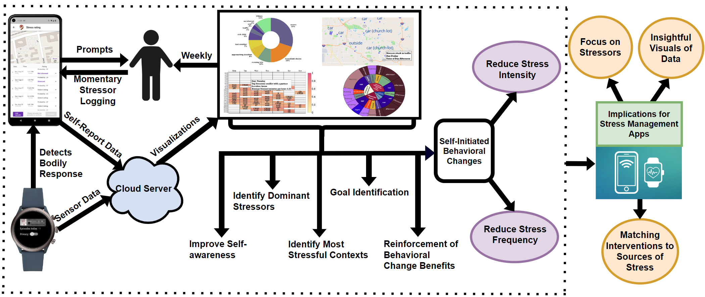
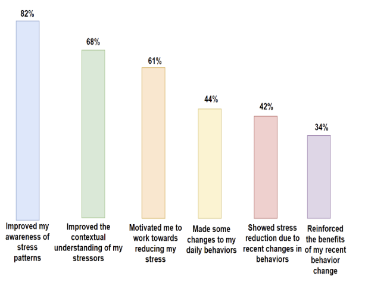
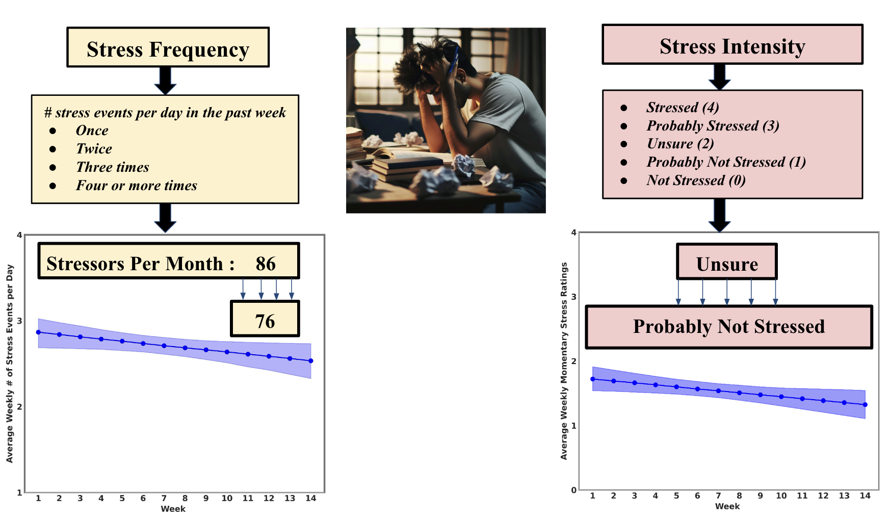
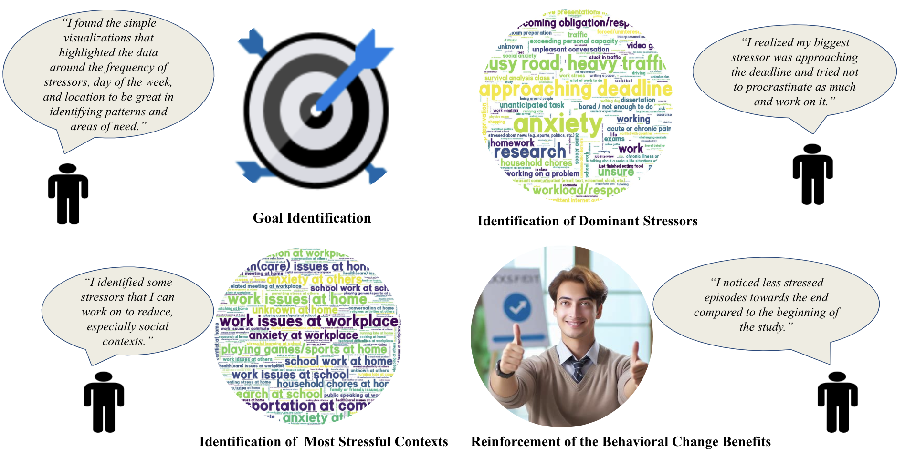

MOODS
The
MD2K Center of Excellence
at
The University of Memphis
Home
Results
FAQ
Terms
Team
Publications
Illustration of key steps in the MOODS study

Design Rationales for Weekly Visualizations
Sample of all the visualizations designed and deployed in the MOODS Study can be found
here
.
MOODS Participation
136
Participants
6911
Participant-Days
11,222
Total Stressors
Word Clouds of Stressors and Locations
Reported in the MOODS Study
Stressors
Locations
Changes in Self-Awareness of Stress and Stressors
During the MOODS Study
Motivation to Join the MOODS Study
Impact of Weekly Visualizations

Reduction in Self-reported Stress

Participants’ Journey Towards Self-Initiated Behavior Changes

Fourteen Types of Self-Initiated Behavior Changes
Approval Ratings of the MOODS Study